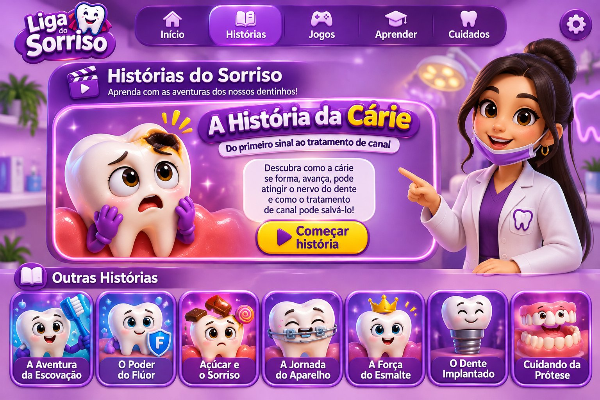

CENA 1 DE 6
História educativa: a progressão da cárie não é inevitável. O diagnóstico e o tratamento dependem de avaliação odontológica.

Do primeiro sinal à possibilidade de tratamento de canal. Avance pelas cenas e descubra o que acontece dentro do dente!
História educativa: a progressão da cárie não é inevitável. O diagnóstico e o tratamento dependem de avaliação odontológica.